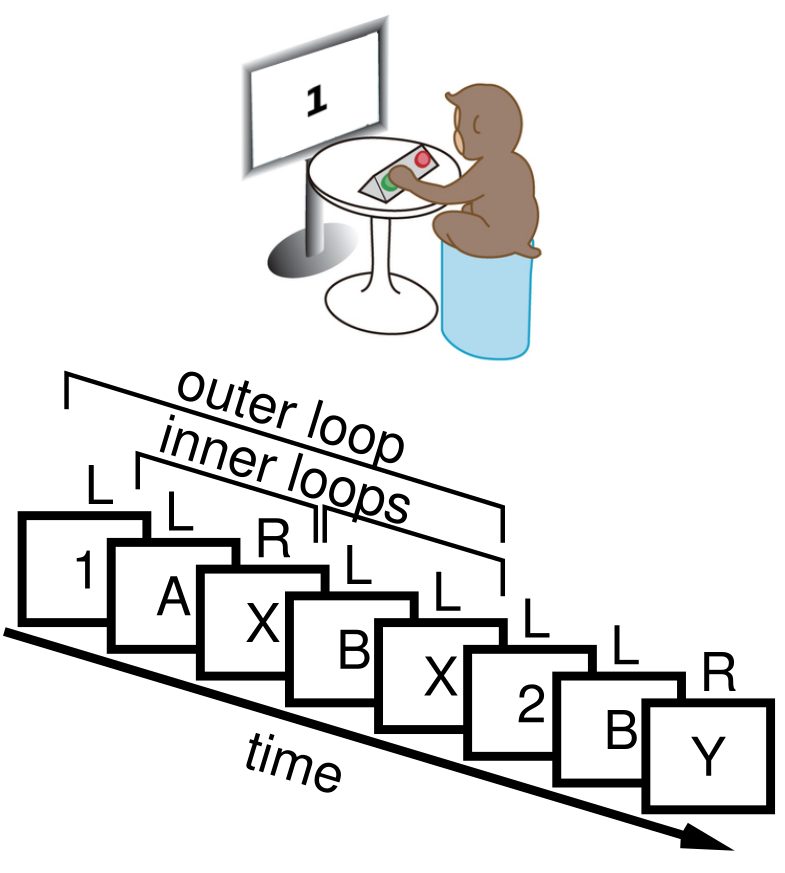
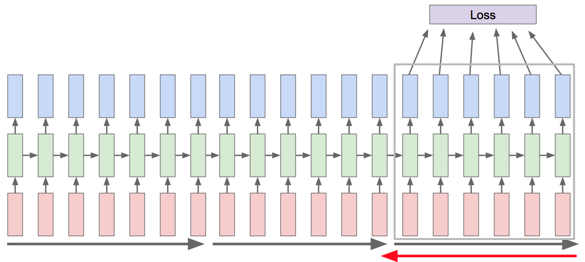
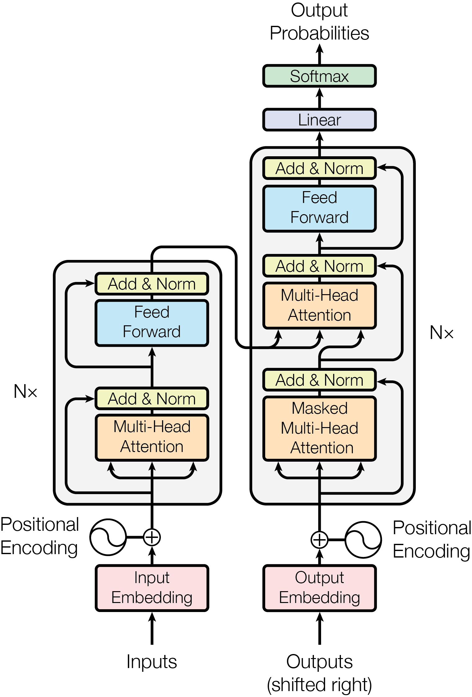

<h1> Neural Networks and Machine Learning </h1> <h2> Week 8: Recurrent Neural Networks And Brain-Inspired Deep Learning</h2> ### Instructor: Emre Neftci <center>https://canvas.eee.uci.edu/courses/21750</center> <center>http://tinyurl.com/nmi-lab-appointments</center> [](?print-pdf)
<h2> Time-Dependent Data </h2> <ul> <li/> Almost all real-world data has a time-like dimension: For example: <ul> <li />Videos <img src="img/video_data.png" class=vsmall /> <li />Audio <img src="img/some_soundwave.jpg" class=vsmall /> <li />Text <img src="img/pos.png" class=vsmall /> </ul> <li class=fragment /> So Time is just another dimension, like channels in images. But what is special about it? </ul>
<h2> How to Deal with Variable-Sized Dimensions?</h2> <ul> <li/> Time is a variable dimension. Until now, we dealt with data having static dimensions. There are two ways to deal with this: <ol> <li class=fragment /> Fix the size, truncate (pad) the data that has a larger (smaller) dimension. For example for size 2: <ul> <li/> Three data samples: [[1, 5, 6], [3,4], [3]] $\rightarrow$ [[1, 5], [3,4], [3, None]] <li /> Once the size is fixed, a feed-forward neural network can be used </ul> <li class=fragment /> Use a recursive algorithm: Feed in the data time step by time step and keep a memory of the previously fed data samples <ul> <li/> [[1, 5, 6], [3,4], [3]] $\rightarrow$ [[1,3,3],[5,4, -],[3,-, -] <li /> - is a special symbol means end-of-sequence. Recurrent neural networks are designed to deal with such data </ul> </ol> </ul> <div class=fragment ><p class=pl> This lecture will focus on approaches under 2.</div>
<h2> Recurrent Neural Networks and Working Memory </h2> <div class=row> <div class=column> <p>Working Memory:</p> <ul> <li /> A type of short-term memory <li /> Limited in capacity <li /> Task- and sensory modality-dependent <li /> Necessary for cognitive control </ul> </div> <div class=column> Human brain areas for working memory of face identity and location </div> </div>
<h2> Neural Correlates of Working Memory </h2>
<h2> Working Memory of Cognitive Control </h2>  <p class=ref>O’Reilly and Frank, 2006</p> <p class=pl> How does the brain implement working memory? </p>
<h2> Recurrent Neural Networks (RNNs) in Neuroscience </h2> <ul> <li /> Most models hypothesize that short term memory is a process supported by recurrent connections <li /> An RNN is a network in which the output feeds back into the network (A: Feedforward, B: Recurrent) <li /> The majority of connections in the brain are recurrent <div class=row> <div class=column> <img src="img/cortical_microcircuit.png" /> <p class=ref> Douglas and Martin, 1989</p> </div> <div class=column> <blockquote> ... physically mapped the synapses on the dendritic trees (...) in layer 4 of the cat primary visual cortex and found that only 5% of the excitatory synapses arose from the lateral geniculate nucleus (LGN) </blockquote> <p class=ref> Binzegger et al. 2004</p> </div> </div>
<h2> Recurrent Neural Networks (RNNs) in Neuroscience </h2> <ul> <li /> Recurrent connectivity can support sustained activity <div class=row> <div class=column> <img src="img/F1.large.jpg" /> </div> <div class=column> </div> </div> <p class=ref> Murray et al. 2017 </p> <li /> Such models are difficult to train due to stability issues </ul>
<h2> Models of Recurrent Neural Networks in Neuroscience</h2> <h3>Liquid State Machines </h3> <p class=ref>Maass et al. 2002</p> <ul> <li/> One of the earlier trainable models of RNNs <li/> Also known as Reservoir Learning, Extreme Learning Machines <li/> Only readout connections are trained in a gradient based fashion. Easy to learn, but does not scale well. </ul>
<h2> Models of Recurrent Neural Networks in Neuroscience</h2> <h3> FORCE Learning </h3> <div class=row> <div class=column> </div> <div class=column> </div> </div> <p class=ref>Susillo and Abbott, 2009</p> <ul> <li/> Some recurrent connections are trained <li/> Does not take into account the history of the activities </ul>
<h2> Models of Recurrent Neural Networks in Neuroscience</h2> <h3> Surrogate Gradient Learning </h3> <div class=row> <img src="img/sgdecolle.png"> </div> <p class=ref>Neftci, Mostafa, Zenke, 2019</p> <ul> <li/> Models biological neurons as artificial recurrent neural networks and uses approximate gradient-based learning <li/> Recurrent connections are trained with partial knowledge of the history </ul>
<h2> Recurrent Neural Network in Deep Learning </h2> <ul> <li/> What is the consequence of having a "loop" in the neural network graph? <li class=fragment /> Errors must be propagated through the loop! In the variable size dimension is time, errors need to be propagated to the past. </ul> <img src="img/RNN-rolled.png" /> <p class=ref>https://colah.github.io/posts/2015-08-Understanding-LSTMs/</p>
<h2> Recurrent Neural Networks in Deep Learning </h2> <img src="img/RNN-unrolled.png" /> <ul> <li/> RNNs can be unfolded to form a deep neural network <li/> The depth along the unfolded dimension is equal to the number of time steps. <li/> An output can be produced at some or every time steps. <li/> Depending on the output structure, different problems can be solved </ul>
<h2> Example Tasks</h2> <img src="img/rnn_tasks.jpeg" /> <ul> <li /> Can you find examples for each case </ul>
<h2> Simple Recurrent Neural Network </h2> <ul> <li/> Also called Elman RNN, these are the simplest RNNs. <p class=ref> Elman, Finding Structure in Time <p> $$ \begin{split} h_t = \text{tanh}(W_{ih} x_t + W_{hh} h_{(t-1)} ) \end{split} $$ <li/> A simple recurrent network is simply a network whose output feeds back to itself <li/> Memory fades exponentially in time, and so RNNs have limited use cases. They are useful to understand the challenges of training RNNs. </ul>
<h2> Unrolled Neural Network </h2> <ul> <li /> We can use the same training framework as feed-forward networks by unrolling the variable-size dimension. <img src="img/RNN-unrolled.png" /> <p class=ref>https://colah.github.io/posts/2015-08-Understanding-LSTMs/</p> <li /> We apply back-propagation to the unrolled network. This is called Back-Propagation-Through-Time. <li /> Conceptual difference wrt feedforward networks: Parameters are shared along the horizontal axis. </ul>
<h2> Training a Simple Recurrent Neural Network </h2> <ul> <li/> For sequential tasks, Pytorch expects tensor to have the following dimensions: [time, batch, data] <li/> We will use the MNIST data, but feed the data in row by row. <img src="img/row-by-row-mnist.jpeg" /> <li/> Building the Simple RNN explicitely [](https://drive.google.com/open?id=12oHupqDi4A3JzE88EYTVj6uaPiXJKfYp) <li/> Using the built-in RNN (this one has only one layer) [](https://drive.google.com/open?id=1kCuVnz4gStdkQ9ru8YRVht74_GoLnwqW) </ul>
<h2> Training Variable-Size Samples with Batches </h2> <ul> <li /> We would like to leverage the GPUs parallel capability through batches (as we always did) <li class=fragment /> But tensors cannot have variable sizes, i.e. [[2,3,4], [3,4]] cannot be stored as a tensor <li class=fragment /> We need to pad the data: [[2,3,4], [3,4,None]] and let PyTorch know that the GPU process should not do anything when None is encountered. <li class=fragment /> This requires padding, and packing sequences and involves some coding (we won't do it in this class)
<h2> RNNs and the Vanishing Gradients Problem </h2> <ul> <li /> We can use the same training framework as feed-forward networks by unrolling the variable-size dimension. <img src="img/RNN-unrolled.png" /> <p class=ref>https://colah.github.io/posts/2015-08-Understanding-LSTMs/</p> <li /> We apply back-propagation to the unrolled network. This is called Back-Propagation-Through-Time. <li class=fragment /> There are two problems <ul > <li /> Memory grows without bounds <li /> Vanishing gradients </ul> </ul>
<h2> Solving the Memory problem: Truncated Backpropagation </h2> <ul> <li /> We only backpropagate up to a certain point in the past  <li /> When compared to feedforward networks, this is like stopping backpropagation in an intermediate layer <li /> In this class, we won't have to do this because we work with small models </ul>
<h2> The Vanishing Gradients Problem</h2> <p>The temporal separation between targets and inputs makes training difficult. This is called the temporal credit assignment problem</p> <ul> <li /> Short-term dependencies <img src="img/RNN-shorttermdepdencies.png" class=small /> <li /> Long-term dependencies <img src="img/RNN-longtermdependencies.png" class=small /> <p class=ref>https://colah.github.io/posts/2015-08-Understanding-LSTMs/</p> <li /> In simple RNNs, memory decays exponentially, so it cannot learn log-term dependencies in practice. <p class=ref>Bengio et al. 1994</p> </ul> </div>
<h2> Perfect Integrator </h2> <ul> <li /> We <em>can</em> construct dynamics that keeps a perfect trace: $$ h_t = h_{t-1} +f(x_t) $$ but then we would be overwhelmed by noise <li class=fragment /> The central problem for training networks with memory is that we must choose which information we should remember. <li class=fragment /> But how can we choose what to remember if we don't know what we need to solve the problem?
<h2> Forget Gates </h2> <ul> <li /> Forget gates make storing and forgetting dynamic: $$ x_t = \sigma(a_t) \odot x_{t-1} + f(a_t) $$ <div class=row> <div class=column> <img src="img/LSTM3-gate.png" /> </div> <div class=column> <img src="https://ak6.picdn.net/shutterstock/videos/33064276/thumb/1.jpg" /> </div> </div> <li /> If $\sigma(a_t)=1$ we remember perfectly, at $\sigma(a_t)=0$ we erase $x_{t-1}$ <li /> $\sigma(a_t)$ is a layer of neurons that determines we remember. <li /> Forget gates are the basic building blocks of all "modern" RNNs </ul>
<h2> Long-Short Term Memory</h2> <ul> <li /> The LSTM is the solution to the long term dependency problem proposed by Hochreiter and Schmidhuber in 1997. It is still the state-of-the-art today. <li /> The LSTM builds on the idea of conveying the hidden state without modification. <li class=fragment /> A similar idea was used in a feed-forward network, do you remember which one? <blockquote class=fragment> Their Residual Net or ResNet is a special case of our Highway Net of May 2015, the first very deep feedforward networks with hundreds of layers. Highway nets are essentially feedforward versions of recurrent Long Short-Term Memory (LSTM) networks </blockquote> <ul />
<h2> Long-Short Term Memory</h2> <img src="img/LSTM3-chain.png" /> <p class=ref>https://colah.github.io/posts/2015-08-Understanding-LSTMs/</p> <ul> <li />The top horizontal line is the memory state, $C_t$ <li/> Let's go over the steps one by one </ul>
<h2> LSTM Walkthrough 1</h2> <img src="img/LSTM3-C-line.png" /> <p class=ref>https://colah.github.io/posts/2015-08-Understanding-LSTMs/</p> <ul> <li/> C is the memory state. <li/> It is easy for the information to pass unchanged <li /> The key building block is the gate discussed earlier </ul>
<h2> LSTM Walkthrough 2</h2> <img src="img/LSTM3-focus-f.png" /> <p class=ref>https://colah.github.io/posts/2015-08-Understanding-LSTMs/</p> <ul> <li /> The forget gate: we decide how much of the memory state we will forget. The forgetting factor is a function of the previous hidden state and the input </ul>
<h2> LSTM Walkthrough 2</h2> <img src="img/LSTM3-focus-i.png" /> <p class=ref>https://colah.github.io/posts/2015-08-Understanding-LSTMs/</p> <ul> <li /> $\tilde {C}_t$ determines the candidate new memories to add to $C_t$ <li /> $i_t$ is an input gate determining which values we add </ul>
<h2> LSTM Walkthrough 3</h2> <img src="img/LSTM3-focus-C.png" /> <p class=ref>https://colah.github.io/posts/2015-08-Understanding-LSTMs/</p> <ul> <li /> $C_t$ gets updated... </ul>
<h2> LSTM Walkthrough: Output</h2> <img src="img/LSTM3-focus-o.png" /> <p class=ref>https://colah.github.io/posts/2015-08-Understanding-LSTMs/</p> <ul> <li /> Output: combining memory state $C_t$, input and an output gate $o_t$. </ul>
<h2> Long-Short Term Memory Equations</h2> <div class=row> <div class=column> <img src="img/LSTM3-chain.png" /> </div> <div class=column> $$ \begin{array}{ll} \\ i_t = \sigma(W_{ii} x_t + W_{hi} h_{(t-1)} ) \\ f_t = \sigma(W_{if} x_t + W_{hf} h_{(t-1)} ) \\ g_t = \tanh(W_{ig} x_t + W_{hg} h_{(t-1)} ) \\ o_t = \sigma(W_{io} x_t + W_{ho} h_{(t-1)} ) \\ c_t = f_t \odot c_{(t-1)} + i_t \odot g_t \\ h_t = o_t \odot \tanh(c_t) \\ \end{array} $$ </div> <ul> <li /> The choices in LSTM are arbitrary, several variants of LSTMs exist <li /> Thankfully, there is a predefined LSTM model in PyTorch </ul>
<h2> Feed-Forward vs. Recurrent Networks</h2> <ul> <li/> Due to the difficulties of training recurrent neural networks, they are now falling out of favor. <li/> The State-of-the-art language and audio are feed-forward networks </ul>
<h2> Feed-Forward Example For Time-Dependent Data: WaveNet</h2> <ul> <li/> Wavenet is a type of feedforward Convnet. It uses convolutions "à trous" to obtain large receptive fields <div class=row> <div class=column> <img src="img/dilation.gif" /> </div> <div class=column> </div> </div> <p class=ref> Van der Oord et al. 2016</p> <li/> Learns generative model: $$ p(\mathbf{x}) = \prod_t p(x_t|x_{t-1}, ..., x_0) $$ <li/> Wavenets are the state-of-the-art in audio generation. See <a href="https://deepmind.com/blog/article/wavenet-generative-model-raw-audio"> Google's blog </a>. </ul>
<h2> Feed-Forward Example For Time-Dependent Data: BERT </h2> <ul> <li/> Bert is the state-of-the-art in language modeling. It uses a feedforward "transformers with "self-attention block" to learn relations across text <div class=row> <div class=column>  </div> <div class=column> </div> </div> <p class=ref> Van der Oord et al. 2016</p> <li/> Trained to predict missing words: ("My dog is [MASK]", predict target "Hairy") and next sentence prediction <div class=row> <div class=column> <blockquote> the man went to [MASK] store [SEP] he bought a gallon [MASK] milk Label = IsNext </blockquote> </div> <div class=column> <blockquote> the man [MASK] to the store [SEP] penguin [MASK] are flight ##less birds Label = NotNext </blockquote> </div> </div> <li/> Wavenets are the state-of-the-art in audio generation. See <a href="https://deepmind.com/blog/article/wavenet-generative-model-raw-audio"> Google's blog </a>. </ul>
<h2> Why use recurrent neural networks</h2> <ul> <li/> Few recurrent connections in shallow neural networks can give them similar power to deep neural networks <p class=ref>Schrimpf et al. 2019</p> <li/> Recurrent neural networks are Turing complete, <em> i.e.</em> they can theoretically emulated any computable algorithm <li/> We may not have found the right way to train recurrent neural networks yet <p class=ref>Miller and Hardt, International Conference on Learning Representations, 2019</p> <li/> The real world is continuous-time, physical computing systems (<em>e.g.</em> biological neurons) operate under real-time constraints. </ul>
<h2>Anatomy of the Neuron</h2> <img src="img/neuron_drawing.png" /> - Dendrites: act as inputs ports - Soma: the body of the cell, usually where inputs converge and where action potentials are generated - Axon: propagates action potentials along to other neurons - Terminal Boutons (Synapses): act as outputs of the neuron
<h2>Membrane potential</h2>
<h2>Action Potentials and the Axon</h2> <img src="img/neuron_drawing.png" /> <img src="img/bear-04-02-1.png" /> <p class=pl> Neurons communicate by all-or-none events called Action Potentials, or ``Spikes''</p>
<h2> "Biological" neuron model: The Leaky Integrate and Fire Neuron. </h2> <div class=row> <div class=column> <ul> <li/> Membrane Voltage $$ \begin{split} U_i(t) = & V_i(t),\\ \tau_{mem}\frac{\mathrm{d}}{\mathrm{d}t} V_i(t) = & - V_i(t) + I_i(t),\\ \end{split} $$ <li class=fragment /> Output Spike $$ S_i = \Theta(U_i) $$ <li class=fragment /> Synaptic Currents $$ \begin{split} \tau_{syn} \frac{\mathrm{d}}{\mathrm{d} t} I_{i}(t) = & -I_{i}(t) + \sum_{j\in \text{pre}} W_{ij} S_j(t), \end{split} $$ </ul> </div> <div class=column> </div>
<h2> Discrete-Time Leaky Integrate and Fire Neuron. </h2> <div class=row> <div class=column> <ul> <li /> In discrete time, the spiking neuron dynamics reduce to those of an RNN $$ \begin{split} U_i[t] &= \sum_j W_{ij} P_j[t] , \\ S_i[t] &= \Theta( U_i[t]), \\ P_j[t+\Delta t] &= \alpha P_{j}[t] + (1-\alpha) Q_{j}[t], \\ Q_j[t+\Delta t] &= \beta Q_{j}[t] + (1-\beta ) S_{j}[t], \\ \end{split} $$ <li /> The activation function is a step function </ul> </div> <div class=column> </div> </div>
<h2> Surrogate Gradient Learning </h2> <img src="img/sg_loss_cartoon.svg" class=large /> <ul> <li/> With surrogate gradients, we can train any biological neuron dynamics using gradient backpropagation <li/> By approximating the temporal credit assignment problem, the gradient descent update is compatible with synaptic plasticity dynamics </ul>
<h2> Deep Continuous Local Learning (DECOLLE) </h2> <h3> </h3> <div class=row> </div> <p class=ref>Kaiser, Mostafa, Neftci, 2019</p> <ul> <li/> State-of-the-art learning of spatio-temporal patterns </ul>